International Practices#
Mexico#
Mexico has transitioned towards a free-float exchange rate after the devaluation of the peso 19th december 1994. At the time, the free-float regime was seen as temporary, but with time it gained substantial support and endured up to today.
Mexico Path to Free Float Exchange Rate 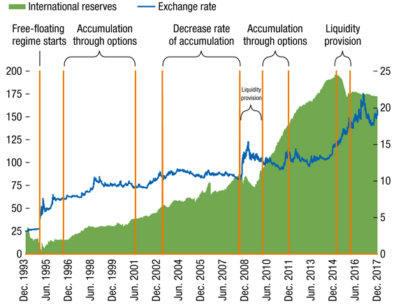 Source: IMF
Funding FX reserves#
One key aspect of the transition has been to accumulate FX reserves to be able to conduct FX interventions to mitigate FX volatility.
Mexico obtain USD remittances from the Federal Public Entities, especially PEMEX, the national oil company
When the level of foreign reserves is deemed inadequate, the central bank has resorted to rules-based approaches to buy/sell US dollar from the market with preannounced auction mechanisms, where timing and prices were known in advance
Buying USD via the sale of US dollar put options to the market via monthly auctions (1996-2001 and 2010-2011) with two requirements
The option strike price is the fix exchange rate determined by the Bank of Mexico on the previous business day
The option can only be executed only when the peso exchange rate of exercise has appreciated with respect to its 20-day moving average (meaning buying when USD is cheap)
When the level of foreign reserves was deemed too high due to sterilization costs: selling USD via spot auctions half of the amount accumulated during the previous quarter
FX Sterilized interventions to smooth volatility#
Interventions on the spot market via rules-based auctions
US dollar auctions with and without minimum bid price
With minimum bid-price, decided on previous business day +2% (bid are only eligible if they are above this price, yet it is a multiple price auction)
Without minimum bid-price and without triggering rule. The auctions are interactive, the participants know the bids during the auction and could improve their bid.
Auctions of USD-denominated credit lines offered to banks, which they could on-lend to corporates (USD 3.2 billion in 2009)
The resources came from the swap line with the Fed, not from the BAM reserves themselves. The BAM still takes only the counterparty risk
Limit moral-hazard via an auction-based pricing mechanism, revealing true banks’ risks (“no free lunch”)
Direct USD sales (discretionary) where the tendered amount and triggers are decided by the BAM FX commission
Including with institutions outside of the country (in 2017)
BAM Other FX Interventions Instruments#
Foreign Exchange Hedge Auction Program via NDF Auctions Settled in MXN
The BAM wants to sell foreign exchange hedges to participants, without endangering its own FX reserves
Market participants bid for the forward exchange rate they need at the maturity of the contract
At the end of contract: if the spot is higher than the assigned forward price (depreciation), the commercial bank makes a profit settled in pesos
All ND positions are rolled over unitl the BAM decides to stop them
Note that, even though the all transactions are settled in USD, the central bank is short USD. Which is a potential cost (settled in pesos)
Flexible credit line with the IMF to supplement current international reserves
Mexico was one of the first three countries to receive an IMF FCL in 2009 when the program was launched
Initially around USD 47 bn, then USD 90 bn in 2016
Mexico Put Options 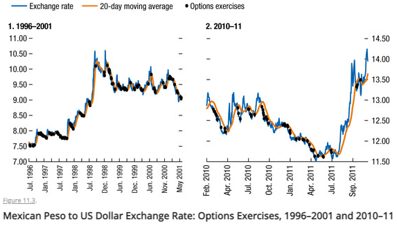 Source: IMF
Mexico FX Interventions#
The BAM interventions framework has been considered by policymakers and the literature as efficient, and without FX target in mind
Empirical evidence suggest that the central bank has been able to contain extreme volatility episodes
Also helping to maintain the policy objective, which is to keep the interbank funding rate at the monetary policy objective
Mexico Interbank Rate 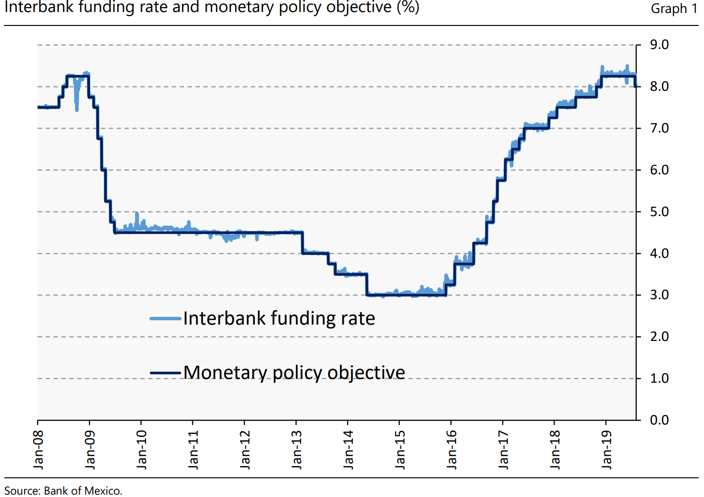 Source: IMF
Brazil#
Brazil during the GFC#
During the GFC, the Brazilian central bank used a combination of different instruments to stabilize the BRL
Swaps
Spot market auctions
Repo market auctions
Trade finance loans
Forward market auctions
Kohlscheen and Andrade (JIMF 2014) find that the currency swaps carried in 2011 Q2-2012 had a significant effect on the BRL/USD
Brazil (2013-2018)#
The BCB implemented the largest ever intervention in the FX derivatives market in August 2013
Initially to counter-act capital outflows and the BRL depreciation during the “Taper Tantrum”
The open position of the BCB in these derivatives summed up to 7% of the Brazilian GDP (30% of the international reserves) in the peak of the program in 2015
The intervention program was considered successful and other EME have followed: Mexico (February 2017), Turkey (November 2017)
Brazil 2013: Hedger-of-Last-Resort#
Due to historical restrictions to buy US dollars in the Brazilian sport market, the country’s FX derivative markets became larger than the spot one.
Intervention program: daily sales of USD 500 million worth of currency non-deliverables forwards
USD forwards settled in BRL, also known as BCB swaps, developped by the BCB (the “swaps cambiais”)
Traded in the local stock exchange (“B3”)
Brazil FX Derivatives Players and their Net Exposures 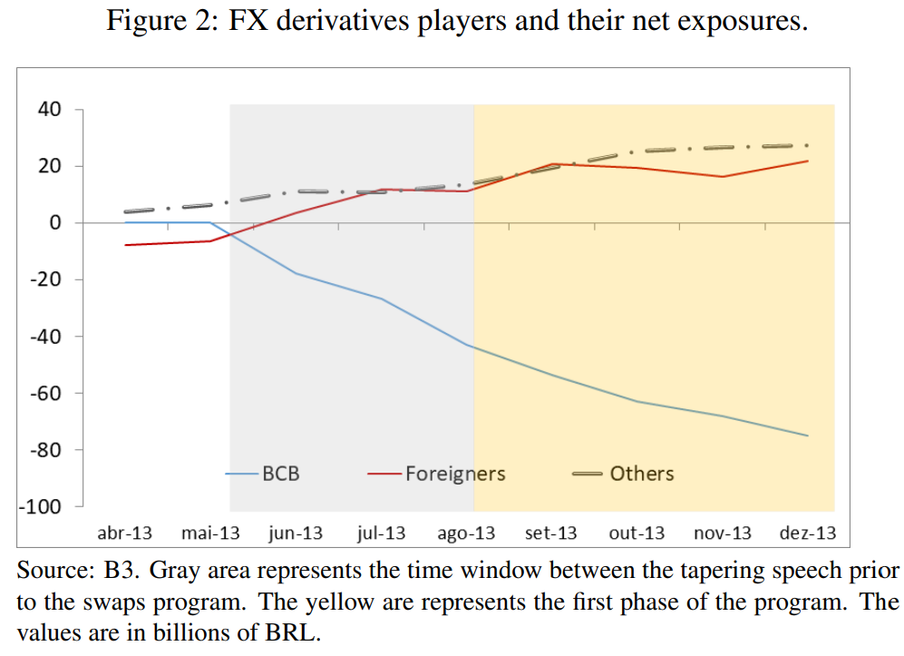 Source: Gonzalez, Khametshin, Peydro and Polo (2019)
Effectiveness#
Effects of the August 22 2013 Intervention in the BRL/USD exchange rate 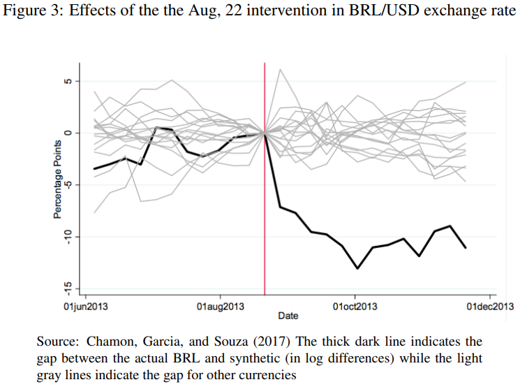 Source: Gonzalez, Khametshin, Peydro and Polo (2019)
Yet the Effect has been Fading Out between 2013 and 2015 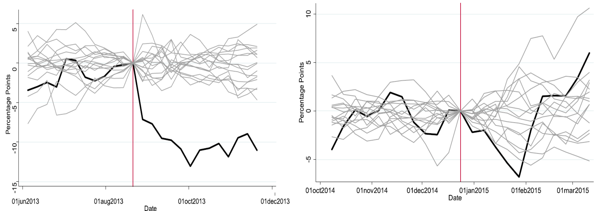 Source: Gonzalez, Khametshin, Peydro and Polo (2019)
Colombia#
Colombia Call and Put Options to Hedge Volatility Risk#
Objective: mitigate FX volatility, after the shift to a flexible exchange rate regime in 1998/99 (used to be crawling bands). “Offer to the market hedges against extreme circumstances”
Offer put (protection against depreciation) and call (protection against appreciation) options
TRM: representative market Colombian peso/US dollar exchange rate
Strike prices: +5% Higher (put) or -5% lower (call) than the 20-day moving average of the TRM
Threshold takes into account a low probability of activation, due to the +/- 5% limit
Amount fixed at USD 180 million then USD 200 million
Some discretion was applied:
When the Colombian peso was weak, the central bank deactivate the put, because the central bank didn’t want to buy USD at this price
Added some discretion when high demand (threshold, etc.)
Colombian Central Bank Foreign Exchange Interventions 1999-2017 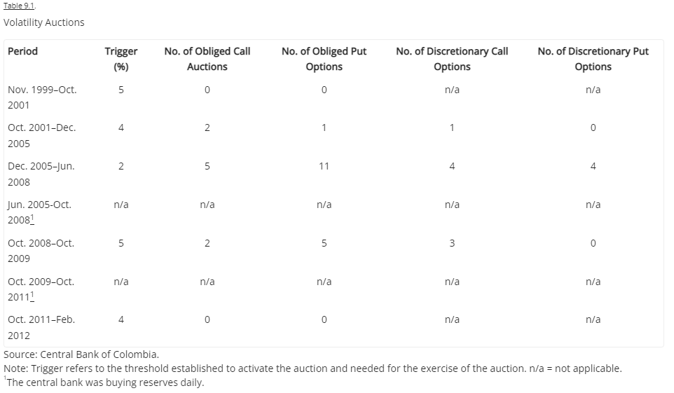 Source: Cardozo, IMF (2019)
Put Options to Accumulate USD Reserves#
How to accumulate FX reserves at the best price and limiting market impact?
Following Mexico’s experience, the Colombian central bank auctioned these options at the end of each month (1999-2002 and 2003-2008) to banks, financial corporations and the MoF
USD options with \textbf{one-month maturity} and a strike price equal to the representative market Colombian peso/US dollar exchange rate (TRM)
Agents can only exercise the option when the TRM was below the 20-day average
The central bank could then avoid buying US dollar when the Colombian peso is weaker than the previous 20 days
Suitable approach to accumulate FX reserves while minimizing market impact
Through these auctions, the central bank bought USD 3.4 billion in 8 years
All 49 auctions were oversubscribed, with min/max amount of USD 30 million and USD 250 million
Colombian Central Bank Foreign Exchange Interventions 1999-2017 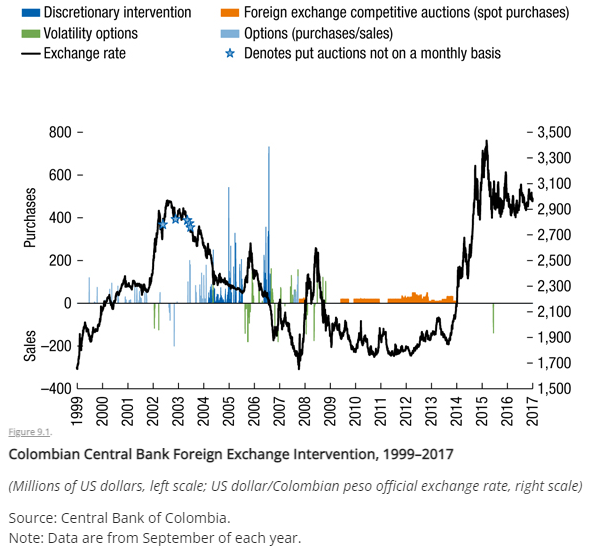 Source: Cardozo, IMF (2019)
Colombia Selling Reserves for Preserving Financial Stability#
Colombia is an inflation targeter operating a flexible exchange rate regime
Foreign interventions should therefore be motivated by financial stability concerns
The operating procedure depends on the type of financial stability threats:
If financial agents suffer from closure in FX credit lines: the central bank intervenes through \textbf{FX swaps} and acts as a liquidity provider
FX swaps don’t transfer FX risks
If there is no private provision of FX hedge on the market, the central bank steps in and provide \textbf{USD non-deliverable forwards}
FX forwards do transfer FX risk
If the foreign reserves are enough, sell spot. If not, sell USD NDF (settled in local currencies)
Colombia Decision Tree for Selling Reserves 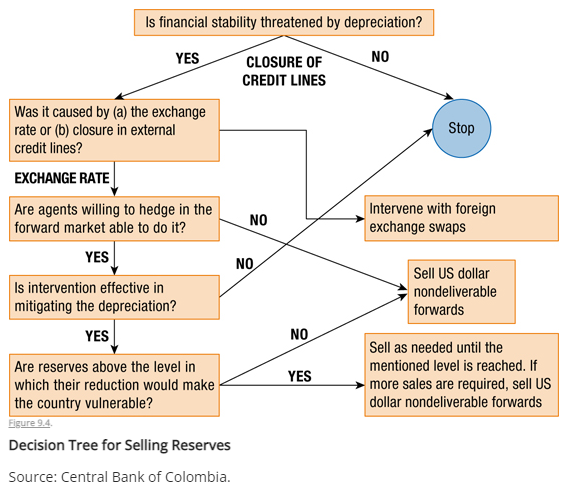 Source: Cardozo, IMF (2019)
Peru#
Peru Monetary Framework#
De jure, the BCRP (the Peruvian central bank) operates an inflation targeting regime with a floating exchange rate arrangement
The inflation target is fixed at 2% with a +/- band of 1%
Yet, because of multiple FX interventions, the IMF has been reclassifying temporarily the exchange rate to crawl-like (with back in forth in 2020 and 2021)
In effect, the BCRP conducts very frequent foreign exchange interventions, as noted in BCRP study 2019 and BCRP study 2018 with frequency of interventions between 50 and 188 days (out of 250 business days) depending on the year !
The main reason is because Peru used to be an \textbf{heavily dollarized economy} and FX volatility creates substantial financial stability risks !
Peru Multiple Objectives 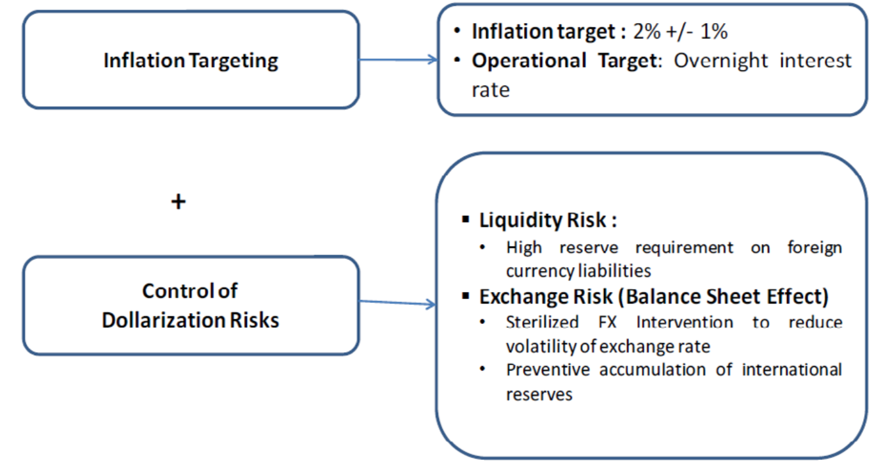 Source: Armas and IMF (2019)
Peru Dollarization Level in Peru 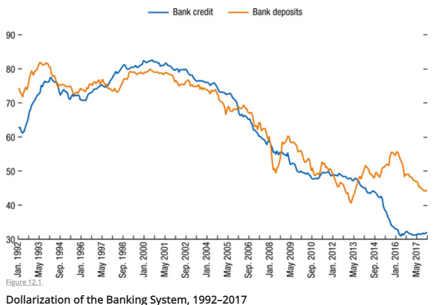 Source: Armas and IMF (2019)
Peru Macro Risk Management Tools 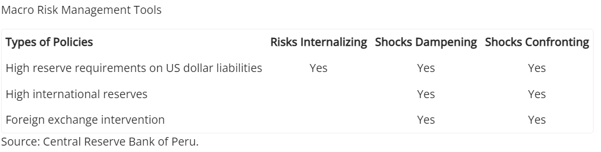 Source: Armas and IMF (2019)
Peru FX Interventions and Exchange Rate 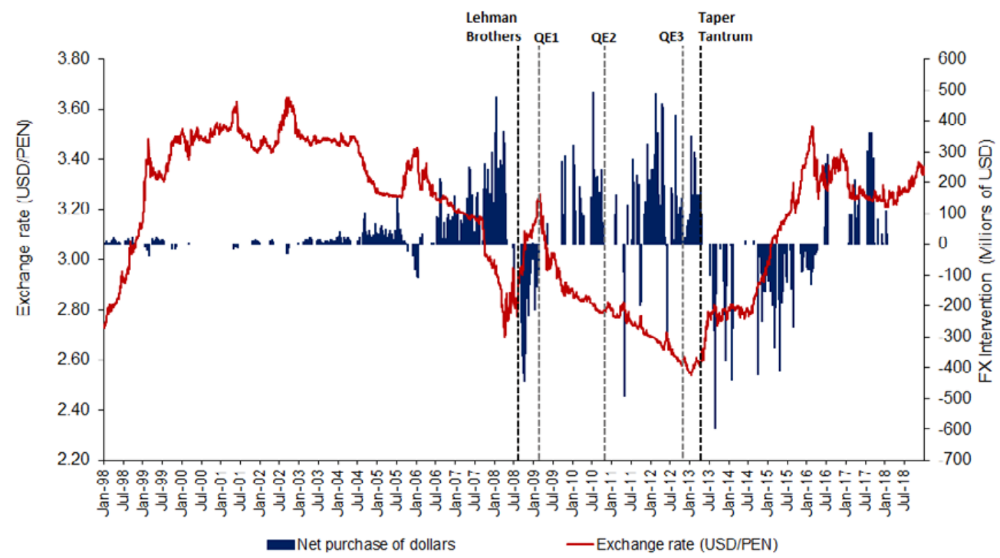 Source: Armas and IMF (2019)
Peru Frequency of FX Interventions 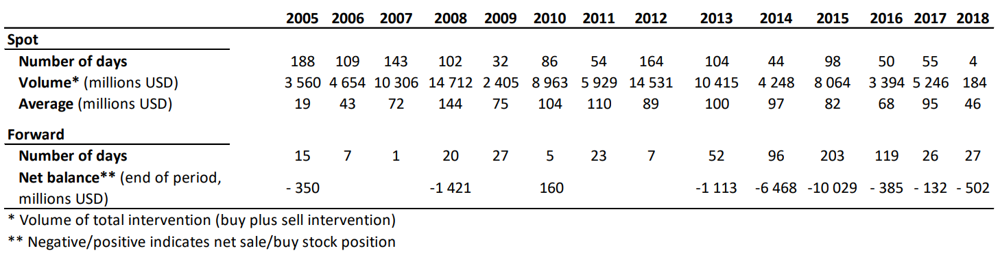 Source: Armas and IMF (2019)
Peru Size of FXI 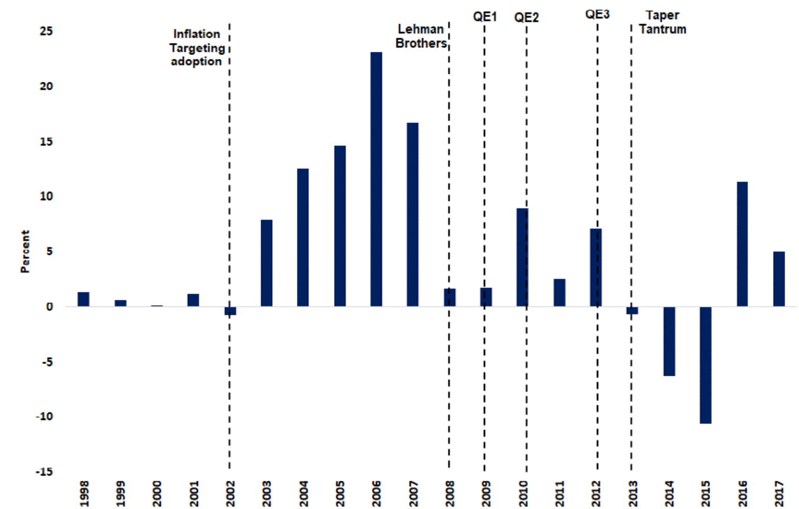 Source: Armas and IMF (2019)
Peru Net Purchases of USD 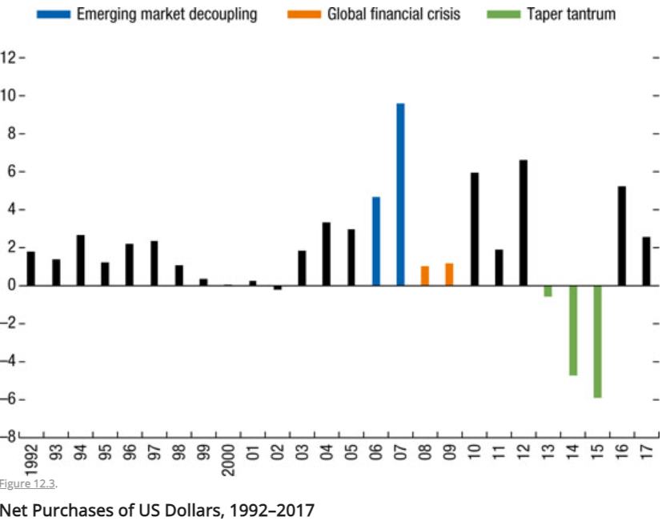 Source: Armas and IMF (2019)
Peru Assessing FXI Efficiency#
Because of financial dollarization, the main objective of FX interventions is to prevent FX volatility
Look at the volatility of the currencies of other countries in the region as a benchmark
Indeed, Peru did pretty well in mitigating volatility compared to average volatility of LATAM currencies
It comes at a cost though: frequent central bank FX interventions don’t provide incentives for the development of the derivatives market in Peru
… forcing the central bank to intervene more often to dampen volatility
This is why the central bank decided to design \textbf{structural policies} to alleviate the financial dollarization problem
Peru Effectiveness of Interventions 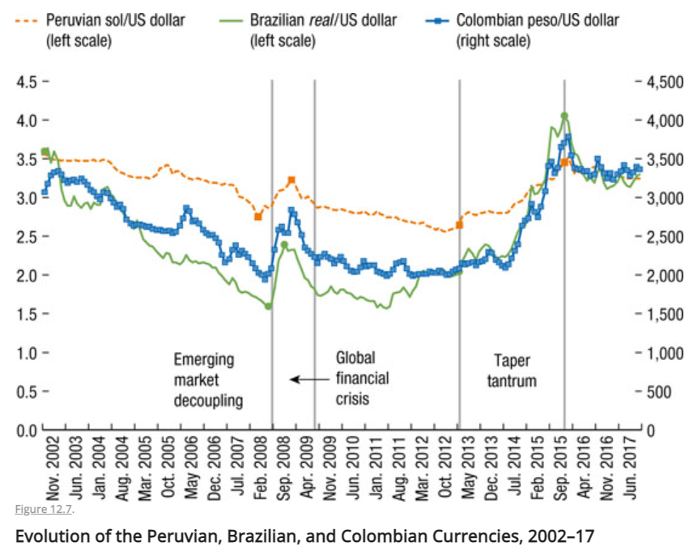 Source: Armas and IMF (2019)
Peru FXI and FX Volatility 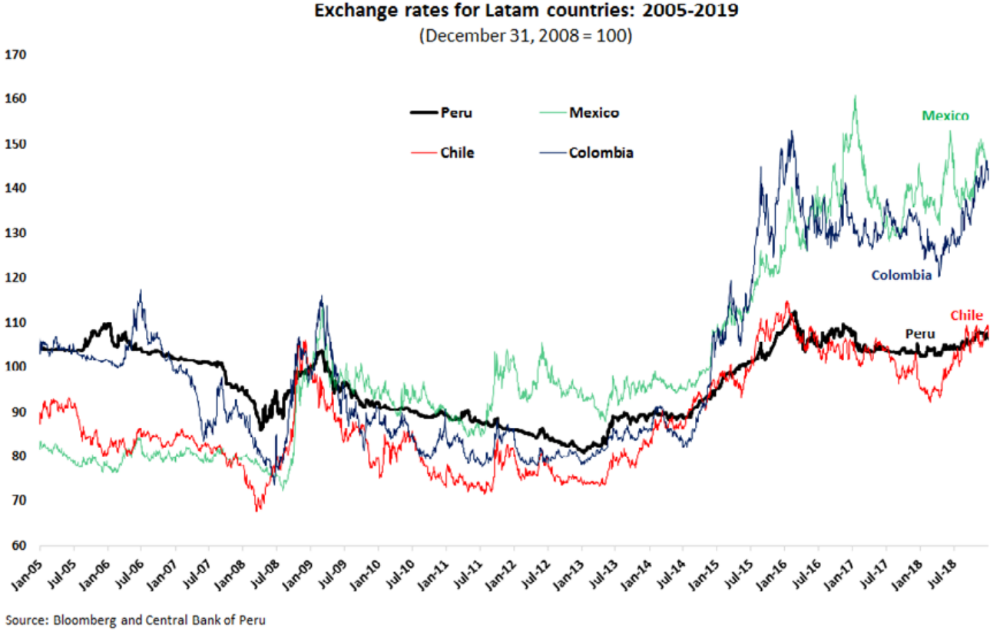 Source: Armas and IMF (2019)
Peru FXI to Protect Against Volatility 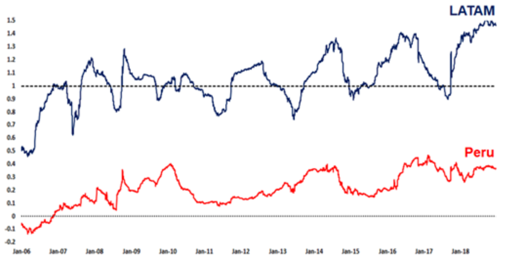 Source: Armas and IMF (2019)
Financial De-Dollarization: Instruments 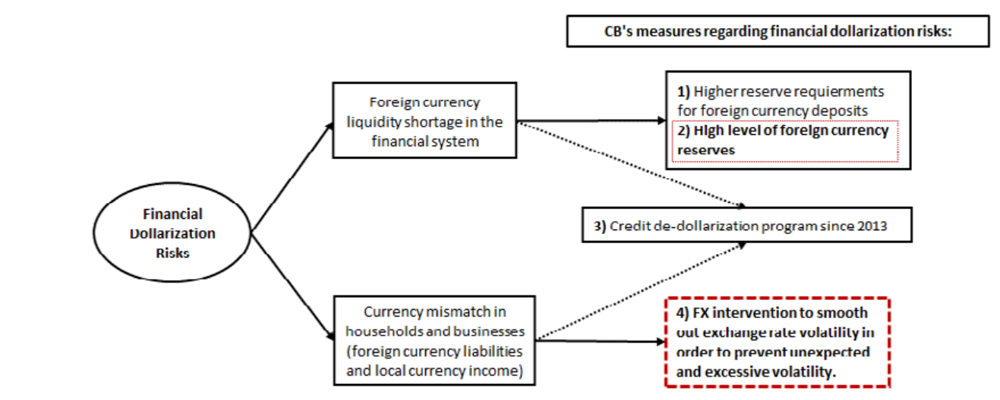 Source: Armas and IMF (2019)
Peru: Dedollarization Repos 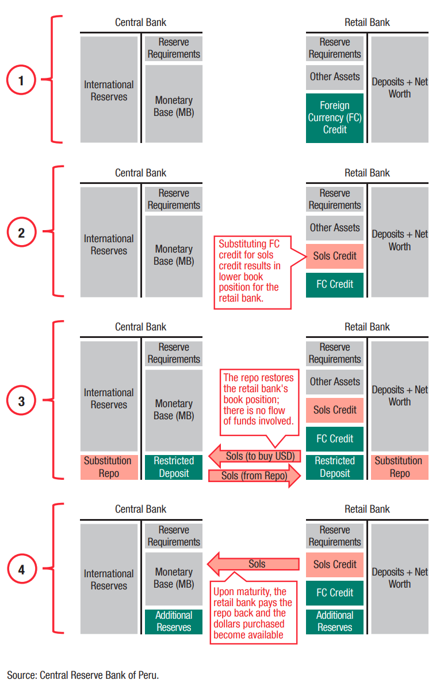 Source: Armas and IMF (2019)
Peru: Structural Dedollarization: Differentiated RRR 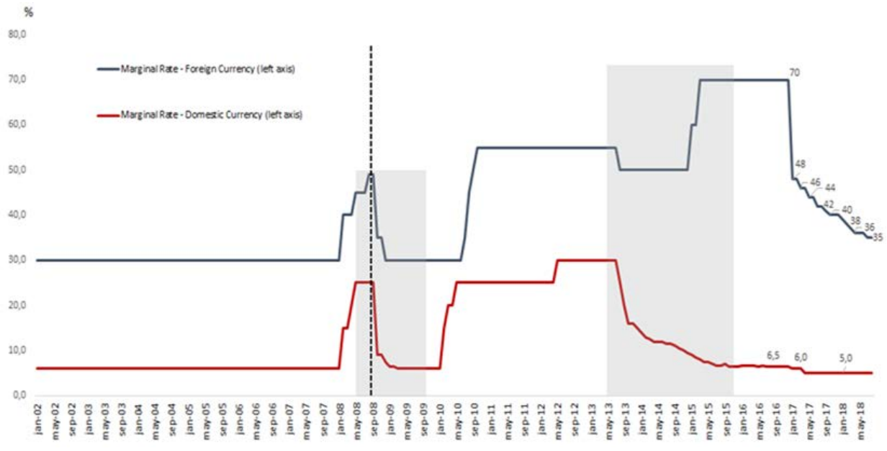 Source: Armas and IMF (2019)
Thailand#
Thailand BOT FXI Objectives#
According to the BOT-BIS article, the objectives of the BOT are:
Curtail excessive and persistent volatility
Discourage speculation
Deter sharp capital flows
Not intended to influence the exchange rate level, nor gaining competitiveness
BOT FXI Implementation#
Uses both verbal and actual interventions
Discretionary timing based on “market developments and market conditions” (volatility, liquidity, etc.)
Looking not only at the spot against USD but also the NEER, the REER and other regional currencies
Conducted mainly via USD/THB spot on both onshore and offshore markets
The BOT employs a designated agent to maintain anonymity in the market
Cancel the signaling effect
Yet the BoT is highly credible, with more than USD 225 bn FX reserves in 2023
BOT Sterilization#
Main instruments: BOT bills and bonds (54%)
Main instrument, supporting market development and curve pricing
14-day to three-year maturity
Separate segments with the Ministry of Finance to avoid arbitrages
Bilateral repurchase operations and deposit faciliy (30%)
FX swaps (16%)
Absorb THB while injecting USD in up to one-years tenors
Mostly used to alleviate USD funding costs in Thailand
BOT: Total Absorption Instruments Outstanding 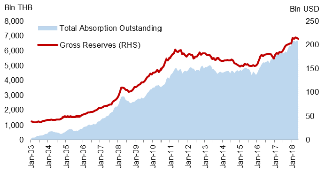 Source: Bank of Thailand (2018)
BOT Communication#
The BOT doesn’t announce interventions ex-ante nor ex-post
Consistent with the market anonymity it is looking for
Yet, it publishes its level of foreign reserves weekly with one-week lag
Direct comunications regarding the effect of FX policy and market operations are also addressed to key influencers - researchers, private analysts and members of the press -
who in turn will make their own communication to the general public